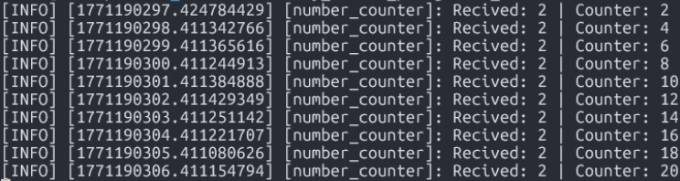
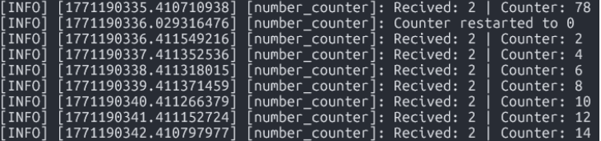

ROS2 Service Server: Reset Counter
Lab 01 – ROS2 Service Server Implementation
- Nombre del proyecto: ROS2 Service Server (Lab 01)
- Equipo / Autor(es): Isaac Antonio Pérez Alemán
- Curso / Asignatura: Applied Robotics
- Fecha: 19/02/2026
1. Activity Goals
- Add a functionality to reset the counter to zero.
- Create a Service Server: Create a service server inside the existing
number_counternode. - Name the service:
/reset_counter. - Service Type: Use the
isaac_interfaces/srv/SetBooltype. - When the server is called, check the boolean data from the request; if it is
true, set the counter variable to 0. - Call the service directly from the command line.
- Create a custom node to call the
/reset_counterservice for extra practice.
3. Materials
- No materials required
4. Code
4.1. Package (package.xml)
In this part, we have to add the necessary dependencies in our package.xml:
<?xml version="1.0"?>
<?xml-model href="[http://download.ros.org/schema/package_format3.xsd](http://download.ros.org/schema/package_format3.xsd)" schematypens="[http://www.w3.org/2001/XMLSchema](http://www.w3.org/2001/XMLSchema)"?>
<package format="3">
<name>my_robot</name>
<version>0.0.0</version>
<description>TODO: Package description</description>
<maintainer email="isaac_aleman_@todo.todo">isaac_aleman</maintainer>
<license>TODO: License declaration</license>
<depend>example_interfaces</depend>
<depend>rclpy</depend>
<depend>my_robot</depend>
<depend>isaac_interfaces</depend>
<test_depend>ament_copyright</test_depend>
<test_depend>ament_flake8</test_depend>
<test_depend>ament_pep257</test_depend>
<test_depend>python3-pytest</test_depend>
<export>
<build_type>ament_python</build_type>
</export>
</package>
4.2. Node Logic & Callback Analysis
Before writing the full code, we define the node class IsaacCounter(Node) and create the function for the callback.
The callback evaluates the boolean request.data:
- If True: It resets the counter to 0, logs the event, and returns a success response (True) with a confirmation message.
- If False: It takes no action and returns a response indicating the reset was not performed (False).
4.3. Full Node Code (isaac_counter.py)
python
#!/usr/bin/env python3
import rclpy
from rclpy.node import Node
from isaac_interfaces.msg import Int64
from isaac_interfaces.srv import SetBool
class numCounter(Node):
def __init__(self):
# Initialize node with the name "isaac_counter"
super().__init__("isaac_counter")
# Creates a service server type SetBool. (Service type, service name, callback function)
self.server_ = self.create_service(SetBool, "/reset_counter", self.read_bool_callback)
# Start the counter on 0
self.counter = 0
# (Type, topic name, callback function, queue size)
self.subscriber = self.create_subscription(Int64, "/number", self.callback_receive_info, 10)
# (Type, topic name, queue size)
self.publisher = self.create_publisher(Int64, "/number_count", 10)
# Subscriber callback. Triggers every time a message is received on /number.
# Adds the received value to the internal counter and publishes the updated total.
def callback_receive_info(self, msg: Int64):
# Accumulate received value
self.counter += msg.data
# Create message to publish
out_msg = Int64()
out_msg.data = self.counter
# Log received value and current counter state
self.get_logger().info(f"Received: {msg.data} | Counter: {self.counter}")
# Published updated counter value
self.publisher.publish(out_msg)
# Service callback for /reset_counter. If request.data is true, reset the counter to 0.
def read_bool_callback(self, request, response):
# Boolean condition
if request.data:
# reset counter
self.counter = 0
# Indicates successful reset
response.success = True
response.message = "Counter reset to 0"
# Log reset event
self.get_logger().info("Counter restarted to 0")
else:
# No reset performed
response.success = False
response.message = "Counter not reset"
return response
def main(args=None):
rclpy.init(args=args) # Initialize rclpy
counter_node = numCounter() # Create node instance
rclpy.spin(counter_node) # Keep the node alive and processing callbacks
rclpy.shutdown() # Shutdown rclpy
if __name__ == "__main__":
main()
4.4. Workspace Configuration (setup.py)
python
from setuptools import find_packages, setup
package_name = 'my_robot'
setup(
name=package_name,
version='0.0.0',
packages=find_packages(exclude=['test']),
data_files=[
('share/ament_index/resource_index/packages',
['resource/' + package_name]),
('share/' + package_name, ['package.xml']),
],
install_requires=['setuptools'],
zip_safe=True,
maintainer='isaac_aleman',
maintainer_email='isaac_aleman@todo.todo',
description='TODO: Package description',
license='TODO: License declaration',
extras_require={
'test': [
'pytest',
],
},
entry_points={
'console_scripts': [
'C3P0 = my_robot.my_first_node:main',
'number_publisher = my_robot.number_publisher:main',
'number_counter = my_robot.number_counter:main',
'c3p0 = my_robot.c3p0:main',
'publisher = my_robot.publisher:main',
'listener=my_robot.listener:main',
'todayclas = my_robot.todayclas:main',
'status_pub = my_robot.status_pub:main',
'num_publisher = my_robot.number_publisher:main',
'num_counter = my_robot.number_counter:main',
]
}
)
5. Execution & Testing
First, we run the nodes for the publisher and the counter in separate Ubuntu terminals:
bash
# Terminal 1: Run the publisher
ros2 run my_robot num_publisher
# Terminal 2: Run the counter
ros2 run my_robot num_counter


Then, we test the reset function by calling the service directly from the command line:
bash
# Terminal 3: Call the reset service
ros2 service call /reset_counter isaac_interfaces/srv/SetBool "{data: true}"
